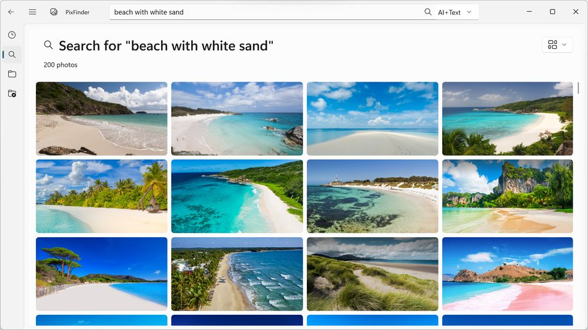
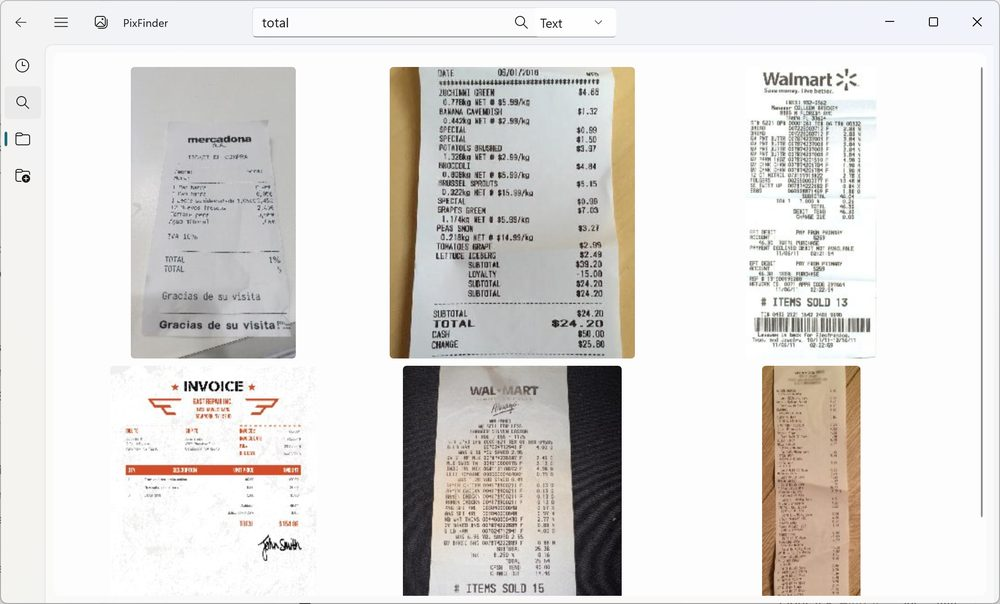
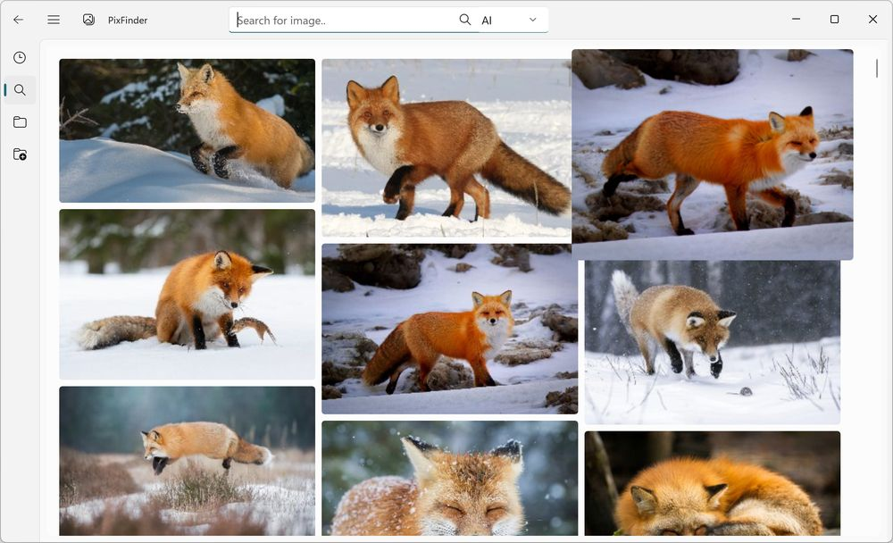
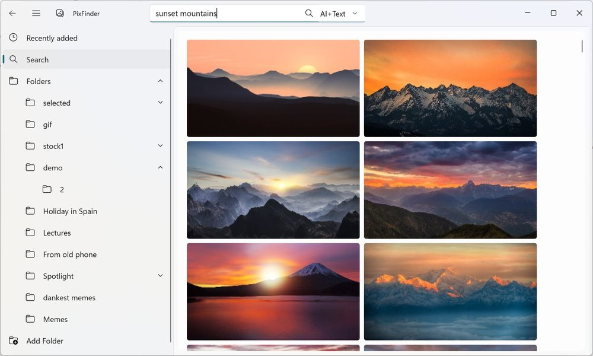
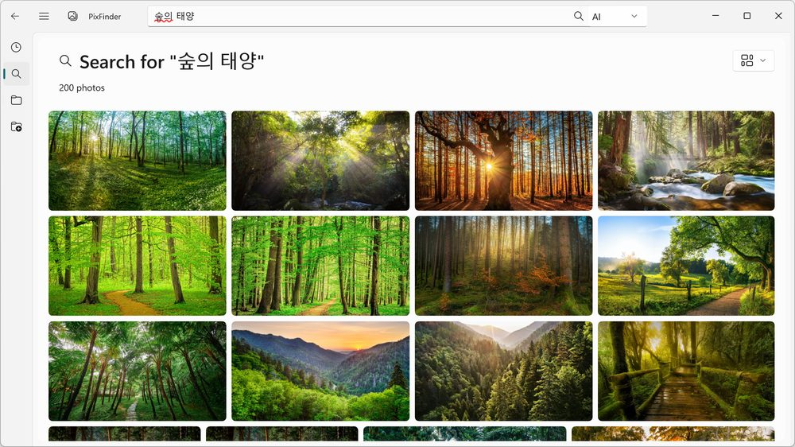
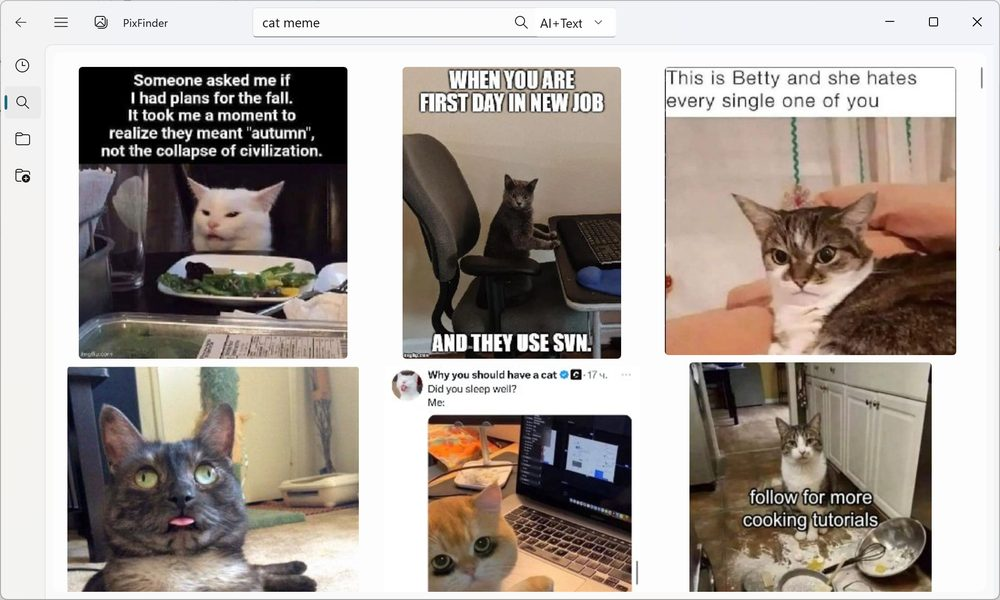
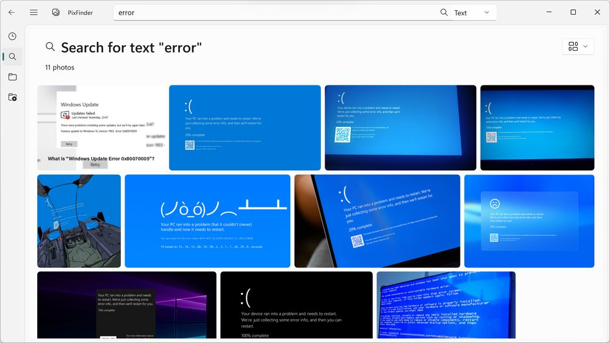
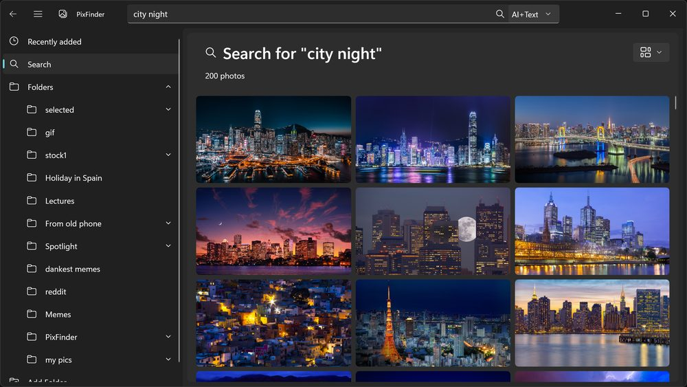
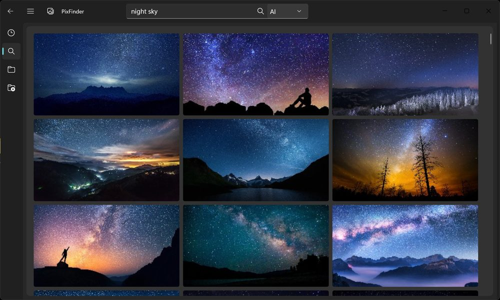

Find any image by typing what you see
PixFinder is the search and organize tool for your image collection. With OCR text recognition, AI-powered visual search and similar picture search you can find a meme, a family photo, a receipt, or that screenshot from three years ago without remembering the filename.
It understands content, not filenames
AI Vision Search
Instantly find images by describing them. Type "beach with white sand", "blue sneaker mockup," or "boarding pass" and get the photo, design, or travel doc.


OCR Text Search
Search any image by the text it contains: invoices, receipts, contracts, business cards, screenshots, whiteboard captures, serial numbers, and scanned documents. PixFinder indexes the text so you retrieve it in seconds.
Similar Image Search
Found one image you like? Get every image like that. Perfect for tracking down duplicates and near-duplicates, gathering all the shots from the same moment or person, or finding other versions of a meme, mockup, or screenshot scattered across your folders.

Multilingual, Offline
No cloud, no translation servers. Language models run locally, so your Italian photos, Japanese chats, and English screenshots are all searchable privately.
Lightning-Fast Browsing
Smooth scrolling, quick loading, and a Windows-native look and feel. Built for huge libraries — 10,000+ images load without stutter.
Private by Design
Everything runs locally on your Windows PC. No cloud upload, no account, no tracking — the 100% Offline approach you expect from a local search tool.
Point it at your folders once
Add your folders
Downloads, Desktop, WhatsApp, Slack — point PixFinder at wherever your images pile up.
It indexes locally
AI and OCR models run on your PC to understand every image and read its text. Nothing is uploaded.
Type what you see
Describe the image or the text inside it and get results in seconds — no filename required.
From "where did I save that?" to found
A closer look






Supported formats
System requirements
Make image discovery effortless
Download PixFinder free and search your entire image collection by typing what you see.
Download for Windows